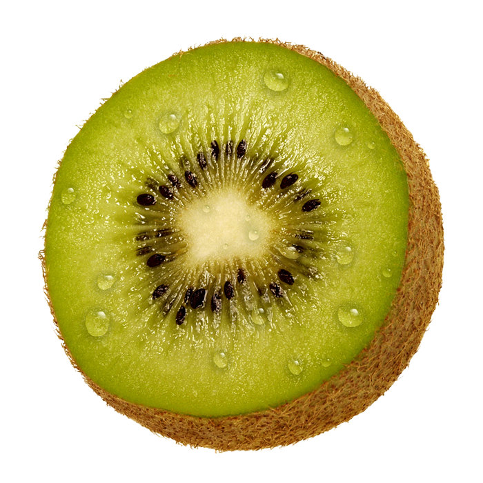

Healthy alternatives
Kiwi |
|
The Kiwi contains about as much potassium as bananas and a high amount of Vitamin C, more than oranges. It is also rich in Vitamins A and E, flavonoids and minerals. The kiwi fruit actually has twice the Vitamin E of an avocado, but it has only 60% of the avocado’s calories. Kiwis are popular ingredients in DIY face masks. Kiwis are rich in alpha hydroxy fruit acids, vitamin C, E and K. Kiwis are ideal for exfoliating, nourishing and anti-aging. Since kiwis contain up to 10% of recommended daily folate levels, pregnant ladies are encouraged to consume them for healthier babies, Kiwi is also packed with blood pressure-lowering potassium. In fact, a 100-gram serving of kiwifruit, that is about one large kiwi, provides 15% of the Recommended Daily Allowance (RDA) of potassium. Previous kiwi fruit facts have already shown that kiwis are incredibly low in calories and high on many other nutritious substances of which vitamins may be the most important ones all of them. Vitamins are organic compounds that our bodies need to sustain life, and kiwi fruit facts show that kiwis are loaded with them. A cup of kiwi contains 3% of our recommended daily intake of vitamin A, 273% of vitamin C, 13% of vitamin E, 89% of vitamin K, 3% of thiamin, 3% of riboflavin, 3% of niacin, 6% of vitamin B6, 11% of folate, and 3% of pantothenic acid. In addition, kiwi fruits are also rich in potassium and fiber. In conclusion kiwi is very healthy for us and brings many benefits to our body, we should consume more of this fruit since it helps in various areas of the body and this keeps us healthy. |
|